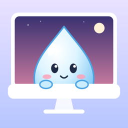
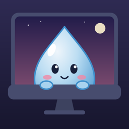
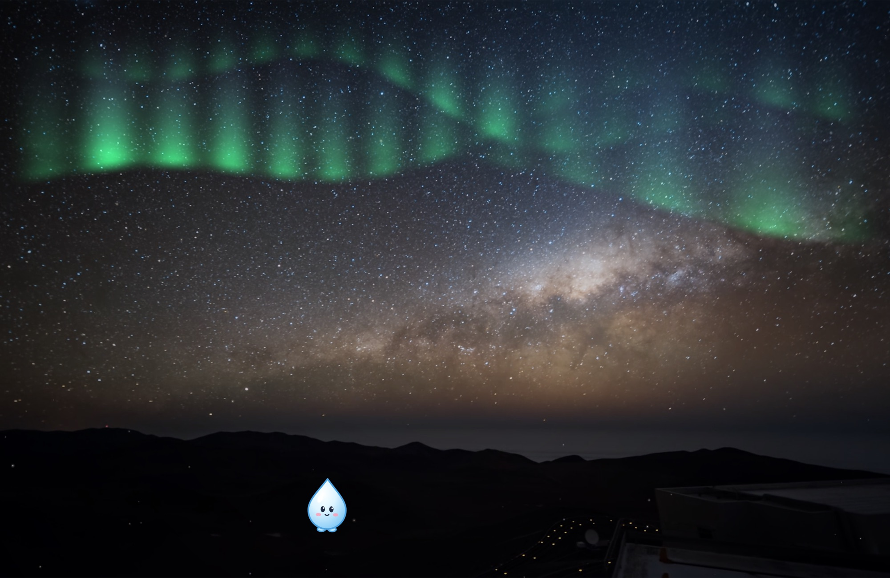
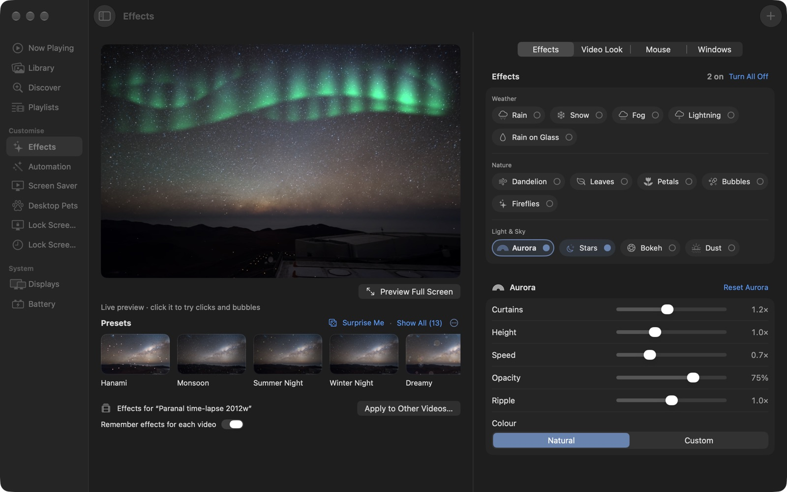
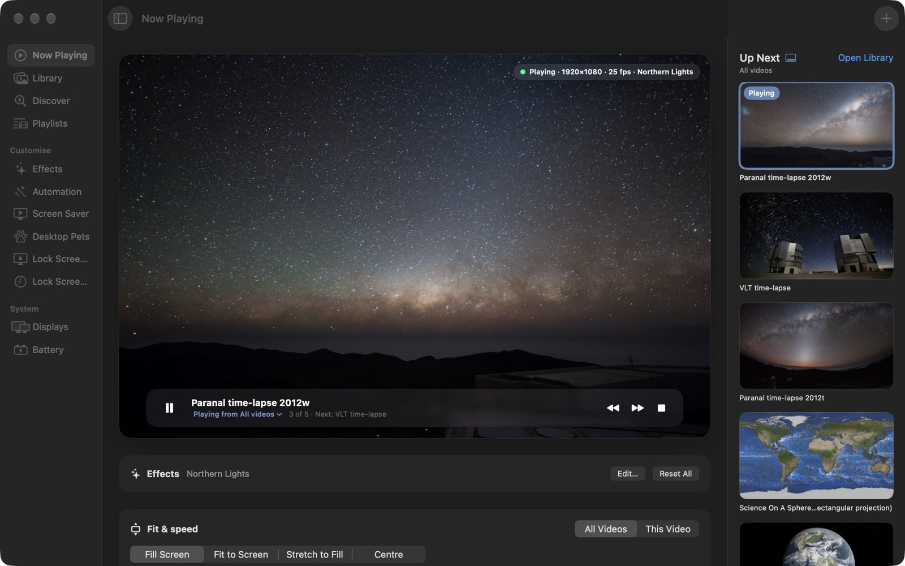
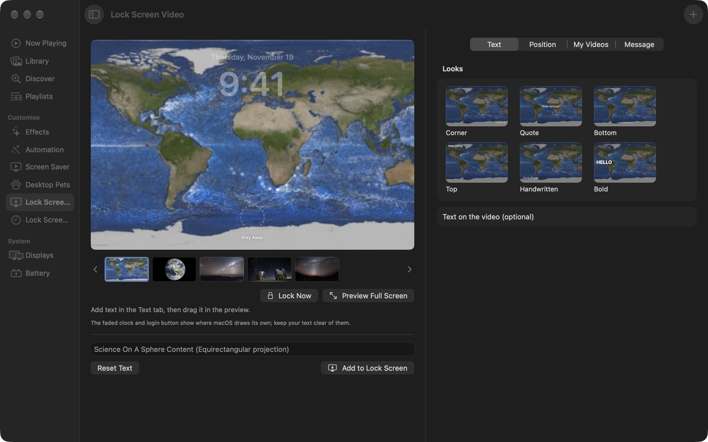
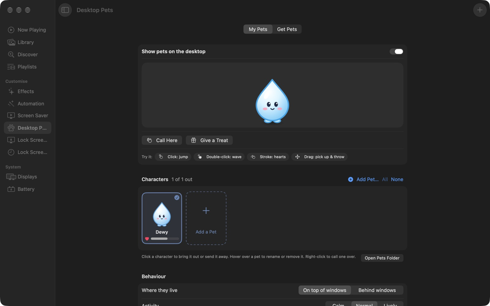

DewdeskLive video wallpapers, real-time weather effects, a video on your Lock Screen and a little dewdrop friend who walks along your windows. A free menu bar app for Macs with Apple silicon.

Paranal time-lapse by ESO/C. Malin, with the Northern Lights effect on top. Dewy is on the desktop, and another one walks along the top of the screen. Click it.
It plays behind your icons, and pauses by itself when windows cover the desktop or your battery runs low.
Rain, snow, fog, lightning, petals, fireflies, aurora, bokeh and more. Pick a preset like Hanami, Monsoon or Northern Lights, or tune every slider. Click the desktop to pop bubbles.

Browse NASA and ESO videos inside the app and download them in one click. Each video keeps its own effects, fit and speed, plus the credit for where it came from.

Put any video from your library on the macOS Lock Screen, add your own text, and restyle the Lock Screen clock. Lock Now lets you try it straight away.

Dewy walks along the bottom of your screen, climbs your windows, sits, naps when you're away and wakes up when you're back. Click to make it hop, stroke it for hearts, or pick it up and throw it.

Bring in more sprite pets with Add Pet or the Get Pets tab.
Your wallpaper as a screen saver, with a gently moving clock. It never locks your Mac.
Effects follow the time of day, the weather and the season.
Different videos for morning, evening and night.
Same video on all, a different one on each, or one spanning across.
Best Look, Balanced or Battery Saver, and a battery rating on every video.
Turn a still photo into a slowly moving wallpaper with depth.
Play, pause, skip and switch effects without opening the window.
Dewdesk is a free hobby project and isn't signed with a paid Apple developer account, so macOS asks you to approve it once. After that it opens normally.
Apple could not verify "Dewdesk" is free of malware that may harm your Mac or compromise your privacy.
What you'll see in step 2
Dewy is original art made for Dewdesk. Some page effects are inspired by React Bits. Dewdesk isn't affiliated with Apple, NASA or ESO.